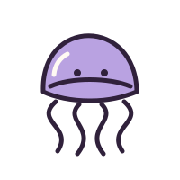
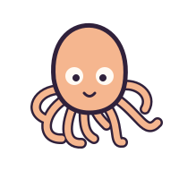

Eight tiles. Four connections.
Flip.Remember.Find a pair.
A small game for a little pause. Meet four curious pairs, follow your memory, and keep the story of every turn.
At your pace. No clock to chase.


A comet, a lantern, and two friends from the sea.
01 / NOTICE
Turn two tiles
Each picture has a name. Take a look, make a connection, then try another pair.
02 / REMEMBER
Let the pairs stay
A match stays face up. A mismatch waits for you to turn it back, so there is time to remember.
03 / KEEP
Save your little story
Finish all four pairs to see every attempt. Keep a circuit here and return to it later.
Every attempt tells a story
A circuit is more than its final move count. Your record includes the tiles you tried, their full names, the pairs you found, and the moment you finished.
Keep one completed record in this browser. Starting another practice leaves that kept circuit waiting for you.
Meet your first eight tiles